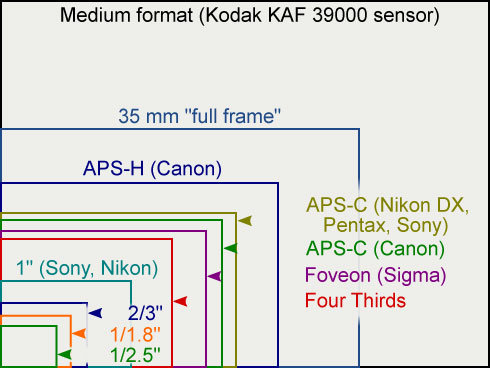

Lecture 1: Welcome!
1. Pinhole Lenses
pinhole lens 是最简单的相机，由一个 pinhole (小孔) 和暗室 (light-proof box) 组成。老师利用 3D 打印机打印了一个 dSLR (单反) 的机身盖，并在上面钻了个孔，如下图所示：

将它直接安装到某个 dSLR 上，在课堂上拍了张照片，效果如下：

2. Categories of Cameras
2.1 SLR (Single-lens Reflex) Cameras (单反相机)

我们常说的单反指的是数码单反 (digital SLR，即 dSLR)，但 SLR 本身与是否是 digital 无关，它也可以使用胶卷，如 Canon ELAN 7E：

2.2 Mirrorless Cameras (无反相机)

无反相机将单反中的光学组件移除，全部电子化。通常更轻量，体型更小。但电子化后，EVF (Electrical ViewFinder) 和 LCD (Liquid-crystal Display) 都需要电能维持工作，因此无反相机也更加耗电。相比之下，dSLR 只在拍照的一瞬间需要消耗电能。
2.3 Compact and Bridge Cameras
Compact camera，也叫 point-and-shoot camera，是面向非专业使用者设计的相机，俗称傻瓜相机。compact camera 通常很轻，配置一个固定的变焦镜头、光圈大小固定和小型感光元件，自带闪光灯。
bridge camera 则是位于 compact camera 和 SLR camera 之间的一种相机，使用者可以手动控制 shutter speed (快门速度)、aperture (光圈大小)、ISO sensitivity (感光度)、color balance (色彩均衡) 以及 metering (测光模式)，但它的镜头同样是固定的变焦镜头，无法更换。
2.4 Camera Phones and Smart Phones
现代智能手机基本都具备强大的拍照功能。
2.5 Others
市面上还存在一些无法归类的相机，如：
- Olympus Air A01：与手机结合使用的机身，支持更换标准镜头
- Dxo-one：与 iPhone 结合使用的机身及镜头
- 与手机镜头直接结合
3. Anatomy of SLR Camera
SLR camera 的基本结构如下图所示：
- Lens：镜头组，用于聚光
- Reflex Mirror：反射镜，用于将镜像传递到 viewfinder
- Shutter：快门
- Image Sensor：感光元件
- Focusing Screen：帮助使用者在 viewfinder 中预览图像
- Condenser Lens：聚光镜
- Pentaprism：五棱镜，用于将图像反射到 viewfinder 上
- Viewfinder：取景器
拍照前，SLR 利用图中 1、2、5、6、7 将相机捕获的图像传递到取景器 8；拍照时，reflex mirror 抬起，第一组shutter 装置打开，将 image sensor 暴露一小段时间，第二组 shutter 装置从同一方向遮挡感光元件，然后 shutter 归位，归位过程中不会再进光，reflex mirror 归位，整个过程如下视频所示：
视频中有一些细节值得关注：
- shutter 并非像电影开机 ("咔") 的装置，从一个方向打开，另一个方向合上，而是通过两组装置 (curtain) 从同一个方向打开和关闭。这么做的好处之一是保证 image sensor 的每一个位置曝光时间相等，此外还能通过控制两组装置之间的间隔大小进一步得到更短的曝光时间。
- 为什么不在 reflex mirror 后面直接放置 image sensor，使用 reflex mirror 来控制曝光时间？主要是为了更精细、准确的曝光控制。reflex mirror 只能通过抬起、复位，两个方向控制曝光时间，其次要获得几千分之一秒的曝光时间难度很大。
- 仔细观察 reflex mirror，可以返现它由两部分构成：primary mirror 和 secondary mirror。这里 primary mirror 并不是 100% reflective，而是让部分光透到 secondary mirror，这种设置可以支持相机提供 auto-focus (自动对焦)、auto-exposure (自动控制曝光) 等功能。
这里有两个指标常用来衡量相机的性能：
- 是否能暴露整个感光元件：相机如果能在很短的时间内，暴露整个感光元件，即第一个 curtain 全部打开后，第二个 curtain 才关闭，对于闪光灯拍摄就十分友好。闪光灯在 curtain 全开后启动，闪光结束后第二个 curtain 才关闭。否则就会拍出一个光带。
- viewfinder black-out time：按下快门时，reflex mirror 弹起，原本进入 viewfinder 的光打在 image sensor 上，这时候 viewfinder 会变黑。我们称 viewfinder 变黑的时间为 viewfinder black-out time。如果这个时间很短，就能在很短的时间后继续拍摄下一张照片，这也是为什么越贵的相机能在 1s 内连续拍摄越多张照片。
3.1 Image Sensor Format (画幅)
常见的 image sensor format 如下图所示：

sensor size 小一些，相机制造更简单一些。对于摄影师来说，同一个镜头安装在更小的画幅上 (如 APS-C) 拍出来的照片就像是从更大的画幅 (如 Full Frame) 拍出来的照片中抠出中间的一部分，如下图所示：
3.2 Film Plane
film plane 是 sensor 所在的平面，通常相机上有一个标识指示 film plane，如下图所示：

在特殊场景，需要人工计算焦距时，可以利用该标识。
4. Extremely Brief History
涉及的内容过少，没有系统性，这里省略。
5. Bits & Bytes
主要介绍 bit 与 byte，kilo、mega、giga 与 tera 之间的关系：
| Prefix | Multiplier | Bytes |
|---|---|---|
| Kilo- | 1,000 Bytes | 1,000 |
| Mega- | 1,000 Kilobytes | 1,000,000 |
| Giga- | 1,000 Metabytes | 1,000,000,000 |
| Tera- | 1,000 Gigabytes | 1,000,000,000,000 |
以及 kibi、mebi、gibi、tebi 之间的关系：
| Prefix | Multiplier | Bytes |
|---|---|---|
| Kibi- | 1,024 Bytes | 1,024 |
| Mebi- | 1,024 Kilobytes | 1,048,576 |
| Gibi- | 1,024 Metabytes | 1,073,741,824 |
| Tebi- | 1,024 Gigabytes | 1,099,511,627,776 |
在本节课中，忽略 kilo/kibi、mega/mebi、giga/gibi、tera/tebi 间的区别。
6. Common Image Format
图像通常用三维数组表示，长、宽和像素点。每个像素点通常由 R、G、B 三个 channel 构成，每个 channel 可能由 8 bits 或 16 bits 表示，越多信息量能保存约丰富的图像细节。此外，如果直接使用这些图像将产生大量的数据，于是就有了图像压缩。压缩分为无损 (lossless) 和有损 (lossy) 两类，常见图像格式及其特点如下表所示：
| Name | Compression | Color | Alpha |
|---|---|---|---|
| JPEG | Lossy | 24-bit | No |
| GIF | Lossless | 8-bit | Yes |
| PNG | Lossless | 24-bit | Yes |
| PSD | Unknown (lossless w.h.p) | 48-bit | Yes |
| TIFF | Lossless | 48-bit | No |
References
- DGMD-E-10: slides,video
- Wikipedia:
- Design and Build Your Own Pinhole Camera
TODO
- 买个机身盖，造一个 pinhole camera